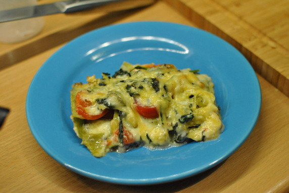

Tomaten-Spinat-Lasagne

- Zubereitung: ca. 20 Minuten
- Backen: ca. 35 Minuten
- Für 4 Portionen
Zutaten
- 500 g TK-Blattspinat
- 2 Knoblauchzehen
- 2 EL Olivenöl
- 6 EL Pinienkerne
- 750 g Tomaten
- 200 g Gorgonzola
- 40 g Butter
- 30 g Mehl
- 250 ml Gemüsebrühe
- 250 ml Sahne
- Lasagneplatten nach Bedarf
- 100 g geriebener Gouda
- Salz
- Pfeffer
Zubereitung
- Den aufgetauten Spinat mit dem im Olivenöl angeschwitzten
Knoblauch ca. 5 Minuten garen. Salzen, pfeffern und mit 4 EL der
Pinienkerne mischen. Die Tomaten waschen und in Scheiben schneiden. Den Gorgonzola würfeln.
- Für die Sauce die Butter zerlassen, das Mehl einrühren und kurz
anschwitzen. Brühe und Sahne angießen und die Bechamelsauce unter
Rühren ca. 5 Minuten kochen. Mit Salz und Pfeffer abschmecken.
- In die gefettete Auflaufform Tomaten, Spinat, Käse, Bechamelsauce
und Lasagnenudeln abwechselnd einschichten, bis alles aufgebraucht ist,
dabei mit Sauce abschließen. Den Gouda und die restlichen Pinienkerne
darauf streuen und die Lasagne im vorgeheizten Ofen bei 200° Celsius ca. 35 bis 40 Minuten backen.